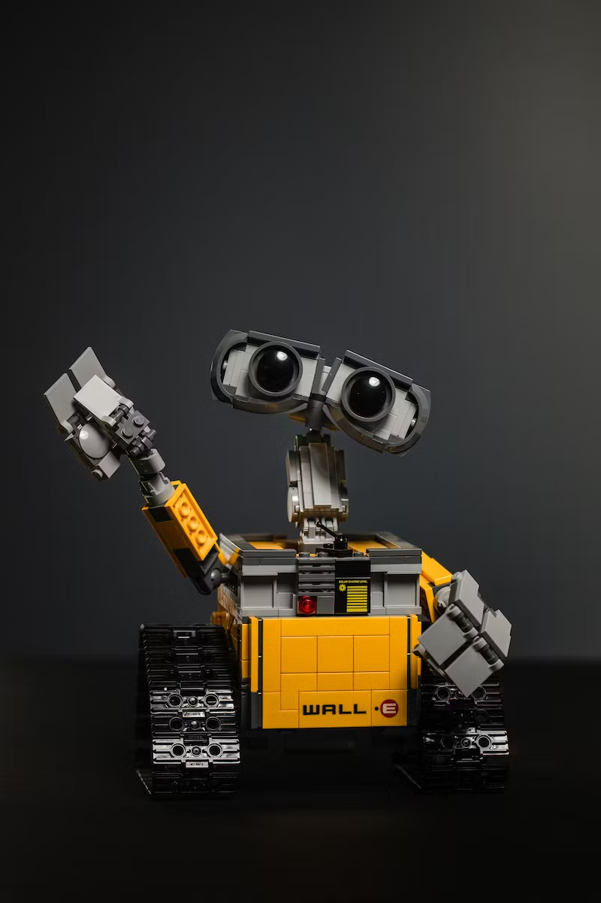

My Favorite Movies
Fantasy and sci-fi movies are like magical journeys into different worlds. They use creativity and technology to tell exciting stories. One of my favorite movies is "Wall-E". This is a heartwarming sci-fi movie set in a future where Earth is covered in trash. Wall-E, a cute robot, shows us the importance of taking care of our planet and finding love in unexpected places. "Big Hero 6" combines both sci-fi and fantasy elements. It's about a group of friends and their lovable robot, Baymax, who use science and bravery to become superheroes. This movie explores themes of loss, grief, and resilience, making it a film that resonates with both kids and adults. It encourages viewers to embrace their inner strengths, work together, and, most importantly, emphasizes the importance of caring for one another. With its heartwarming story and memorable characters, "Big Hero 6" is a cinematic gem that leaves a lasting impression.